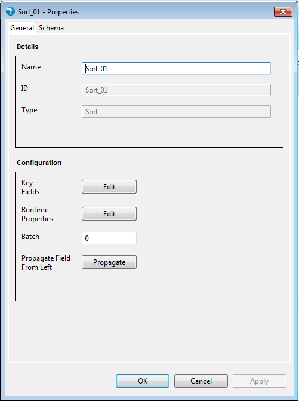
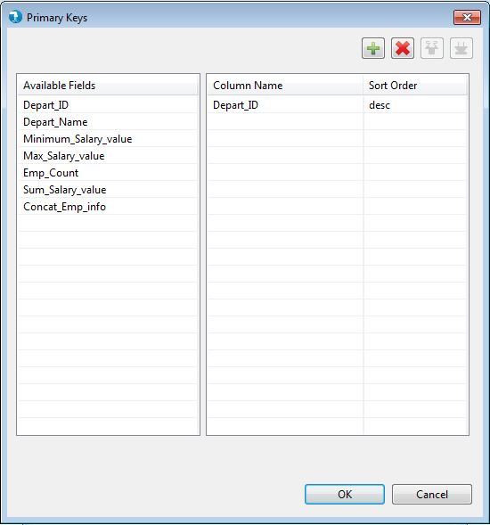
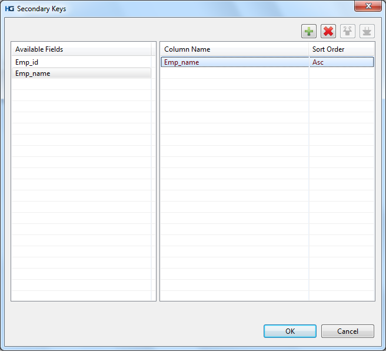

Sort Properties
Hydrograph Release Version 1.0
Properties for the Sort component can be viewed by Double click->component on canvas. The properties contain only the 'General' tab since Sort falls under the Straight Pull category in the component palette.
General Properties:

Display
- Name - The Name field will specify the name of the component as desired by the user.
- Base Type - Base Type signifies the basic operation area of the component. In this case it is of Base Type Straight Pull.
- Type - Type further categorizes the component to detailed operation that it intends to perform. Here it is of type Sort.
Configuration
- Key Fields - element specifies the key columns to sort the input on. The sequence of the fields specified in this element is the sequence followed in the sorting.

- Secondary Keys - holds the minor key information. The secondary key fields element is used to define the fields for sort order on top on the order already defined using key fields element. The sequence of the fields specified in this element is the sequence followed in the sorting.

- Runtime Properties - Runtime properties are used to override the Hadoop configurations specific to Sort component at run time. User is required to enter the Property Name and Value in the runtime properties grid.

- Phase - Phase simply accepts a numeric number starting from 0 to 99 and signifies the phase this component will execute in. By default this is 0.